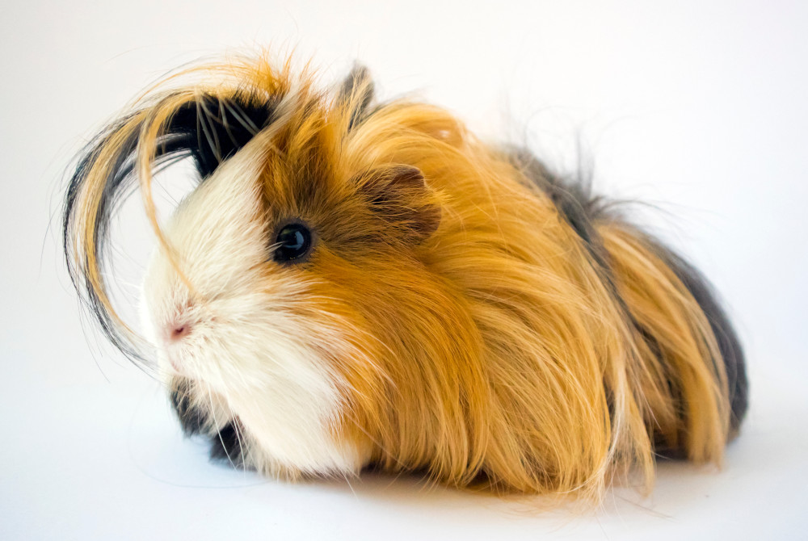

Rocky

What's Up, I'm Rocky ü§üüèΩ
I am a 3 year old Abyssinian Guinea Pig with a big
personality. I'm super friendly and love to play around. My
favorite music is also Rock!
- Age - 3
- Breed - Abyssinian Guinea Pig
- Gender - Male
- Weight - 2 Pounds
- Energy Level - Abundant Energy
- Favorite Activity - Exploring and hiding
-
Personality - playful, enthusiastic, and affectionate
little companions with big hearts!